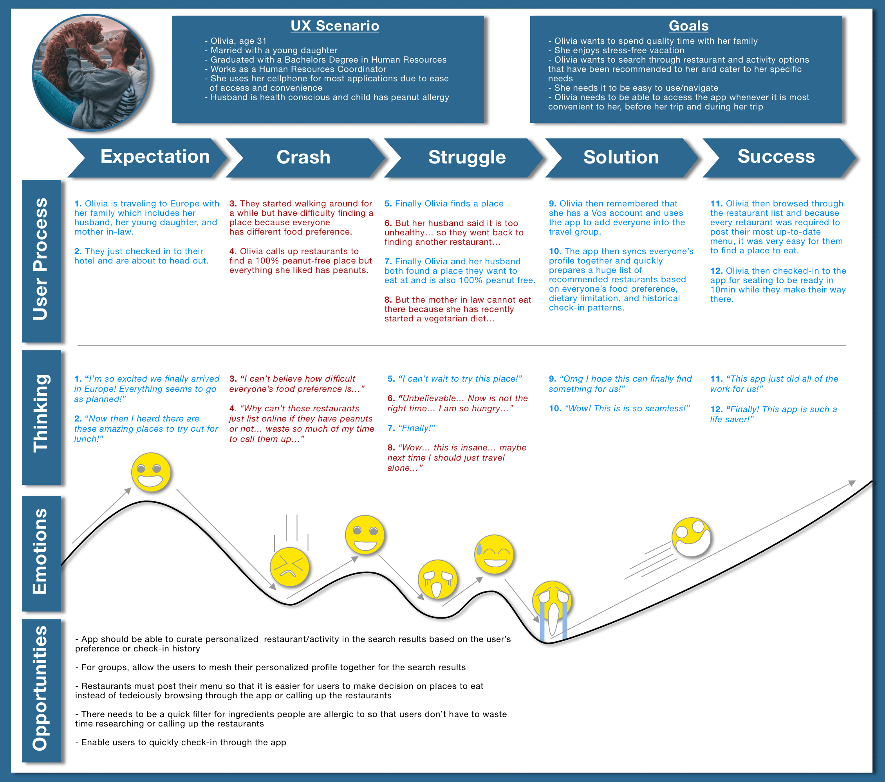
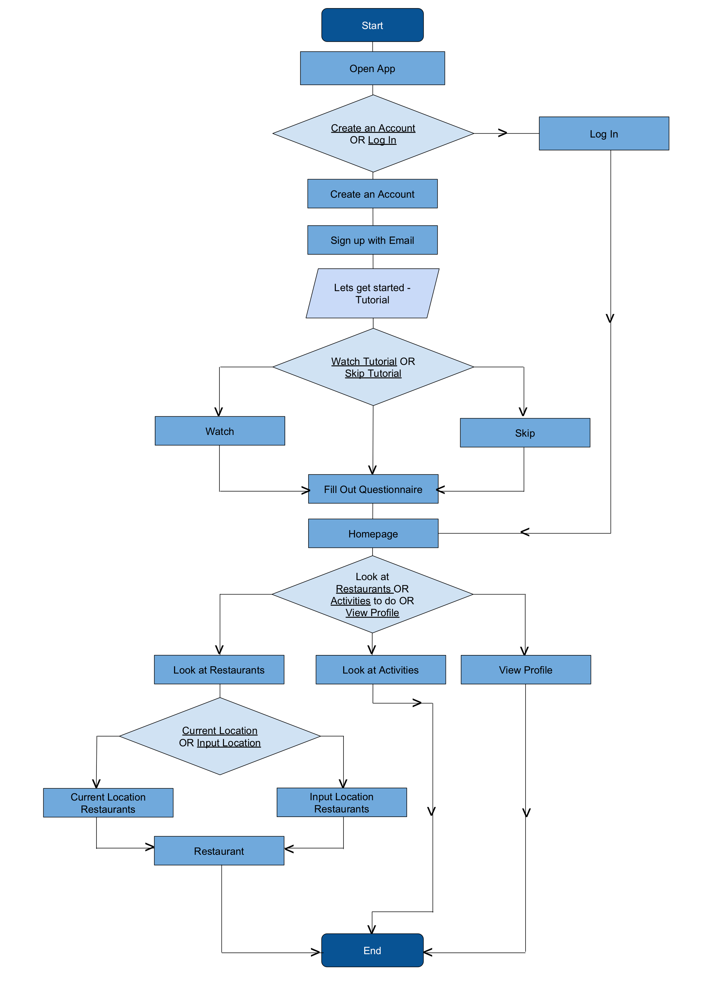
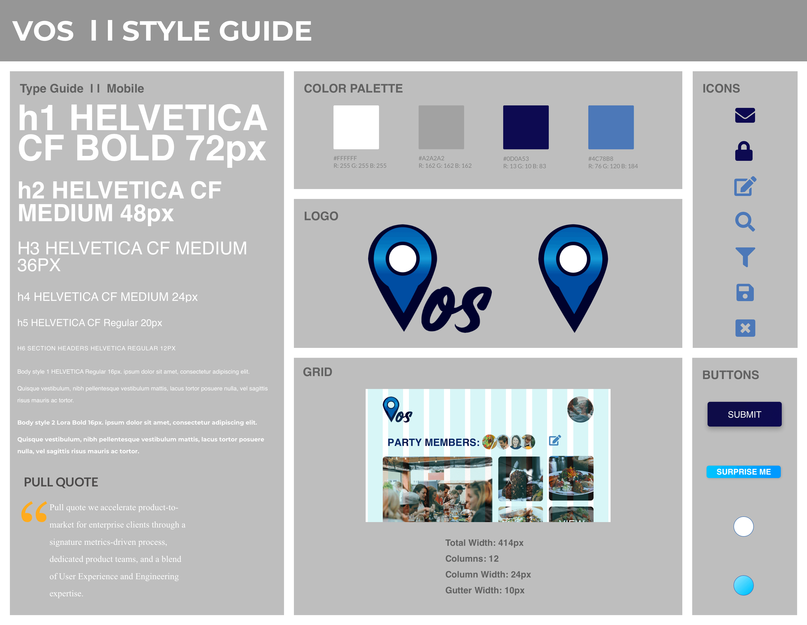

Vos

Overview
Vos is a lifestyle app that uses machine learning to curate experiences and restaurants.
Project Type:
Class Project
Team:
Lamont - Leader, UX Researcher, & UX/UI Designer
Adrienne - UX Researcher
Gabi - UX Designer
Tools:
Pen + Paper
Sketch
Adobe Illustrator
Invision
Problem
With so many resources across the internet, users can get lost in a sea of information and feel
overwhelmed. Some aspect that can be overwhelming is finding new places to eat and things to do when
in an unfamiliar area while traveling. Some constraints that the user can face includes
accommodating preferences of others in their group, dietary restriction, budget, seasonal trends,
promotions, & etc. These factors currently require the user to manually research and this can be
incredibly tedious and time consuming.
Challenge
To solve the user problem, our app had to automate this burden. The first challenge was to discover
all the resources and parameters that a user utilizes and consider when searching for places. From
this we learned that users use a variety of social media to get inspiration for the choices they
pick. For example, Facebook, Twitter, Instagram, and YouTube. We also proceeded with administering
surveys and interviews to find other parameters the users take into consideration. This led us to
discover other influencers we did not initially anticipate; such as friends, families, and local
trends.
From our study, we identified that machine learning could be a plausible solution for solving our
user problem. However, this posed a 2nd challenge in which each team member had to get educated on
how the technology works, the pros, and the cons. After studying this technology and use cases, we
were confident this technology is the solution to our user problem. Machine learning could
consolidate user's historical behavior, preferences, circle of connection, location, trends, and
various other data points to make recommendations.
Design Goal
For our design goal, we wanted to make an app that was clean and minimalistic. As such, we were
inspired to use different palettes of blue as the primary color since this color represents clean
and a lot of whitespace to keep it minimalistic. The idea of minimalism is important because it
enables the app's recommendations to the user to be the center of focus.
Since we were also using machine learning as the primary technology for recommending places to
users, we also had to somehow collect these data without bombarding the user with countless surveys.
Our app will begin this by administering a short questionnaire after signing up. Afterwards, the app
will allow the user to connect their Vos profile to other apps like Facebook, Twitter, Instagram,
YouTube, etc. The app will use these 3rd party apps to learn about the user’s historical behavior,
preferences, and circle of friends. Overtime, the app will become smarter and be able recommend
experiences and restaurants that the user will enjoy without having to spend so much time and energy
searching on their own. This is all efficient but also preserving the cleanliness and minimalism of
our design goal.
UX Process
Our UX process began with the 'Discover' phase by creating a proto persona, conducting surveys, performing competitive analysis, and user interview. Afterwards we proceeded with 'Defining' our ideal users by creating a user persona, storyboard, and journey map. We then continued with 'Designing' by creating decision flow diagrams and paper prototypes. Finally, to complete our UX process, we 'Delivered' wireframes, a style guide, and the high-fidelity prototype.
Discover
Return to UX ProcessProto Persona
Surveys
We started off our survey by asking the user general questions regarding their background so that
we could profile our general user base. What we learned here initially was that most of our users
are millennials.
We then proceeded with asking respondents to identify what app they use when looking for places to
eat or activities to do. If the app we suggested were not available, users could provide a free
response. The purpose for this was so that we can identify our competitors and learn what drives
users to use those apps. From this, we found that the top 3 apps used for searching for places to
eat and activities were Google, Yelp, and Tripadvisor. We then proceeded with asking the
respondents to identify what they take into consideration when picking places to eat and activities
to do.
For eating, the leading considerations were price (87.2%), reviews (76.9%), and location (66.7%).
This enabled us to quickly ideate the essential functions that our app must incorporate.
For activities, the leading considerations were price (76.9%), location (71.8%), reviews (66.7%),
and recommendation from friends/family (61.5%). What was most unexpecting and crucial that we
learned from this study was that 61.5% of respondents rely on recommendations from friends/family.
This led us to ideate using machine learning to identify what the user’s circle of friends are
doing to recommend activities.
Finally, since our app’s value proposition is personalizing recommendations and ask users complete
short questionnaires, we wanted to see if users would respond to these features positively. From
this we found that 97.4% of respondents would like an app that can personalize their interest and
87.2% of respondents feel comfortable completing the short questionnaires.
Competitive Analysis
After learning what our respondents were using to search for places and activities to do, we ran an analysis on our 3 leading competitors; Google, Yelp, and Tripadvisor.
User Interviews
We then proceeded with user interviews.
1. Kim Yu is 29 years old and travels frequently. She uses yelp to search for restaurants in the US
but for international she uses Tripadvisor. She uses these apps primarily to see other people’s
reviews, to see pictures, and for convenience for looking up places in an unfamiliar area. Finally,
she indicates that she does see value from an app that personalizes recommendations for her and
would be comfortable answering questionnaires but it would have to be no more than 5 questions.
Click here
to view the transcript.
2. Jaylen is 23 years old and is an occasional traveler. He uses yelp, social medias, and
recommendations from friends when searching for places to eat or things to do. He uses yelp because
of the ease of access and allows him to quickly search up places based on distance, reviews, and
trend. He uses social media and recommendations from friends because he believes he will like
similar things as his friends or channels that he follows. He thinks that an app that personalizes
recommendation can offer a few things that he would enjoy but he is concerned that it will prevent
him from trying new things. Finally, he indicates that he would like to be able to see and use an
app before having to create an account. Click here
to view the transcript.
Define
Return to UX ProcessUser Persona
We then revised our proto-persona into a user persona to better reflect the findings in our UX research.
Storyboard
For our UX scenario, Olivia is traveling to Europe with her family but they are having difficulty getting around in an unfamiliar country. She quickly realizes that everyone has different dietary limitation or preference that is complicating their search for a place to eat. Fortunately, Vos used geolocation technology to understand that Olivia was traveling with a group. The app then seamlessly synced everyone’s profile together and used machine learning to ensure the recommended restaurants are within everyone’s preference and dietary constraints.
Journey Map

Design
Return to UX ProcessDecision Flow Diagram

Paper Prototype
Deliver
Return to UX ProcessWireframe
Style Guide
High Fidelity User Flow
High Fidelity Prototype
Click the below image to see the prototype!